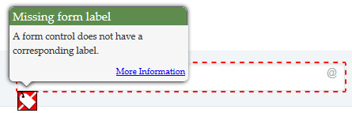
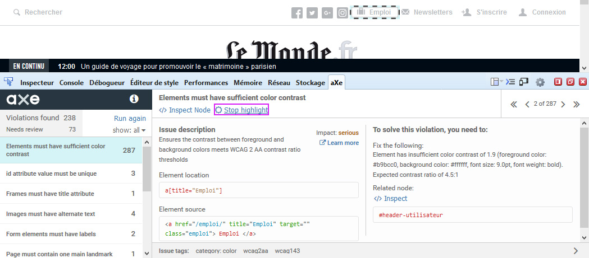
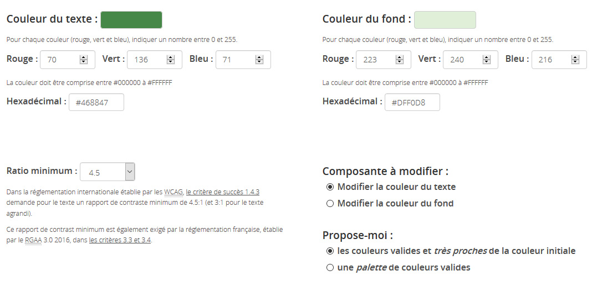
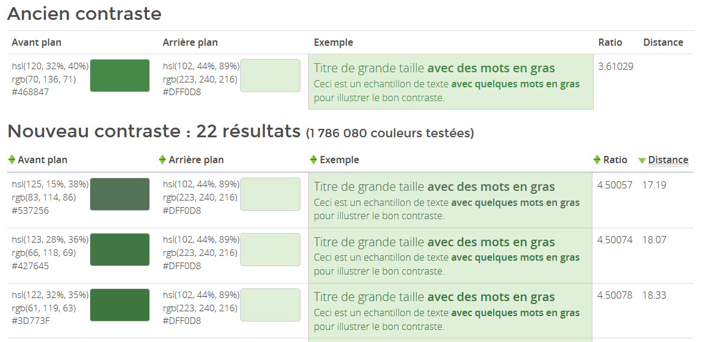
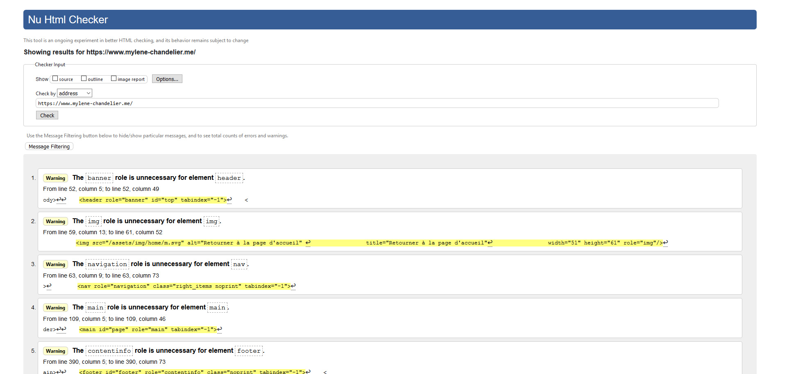
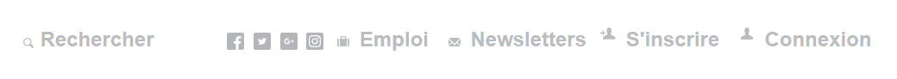
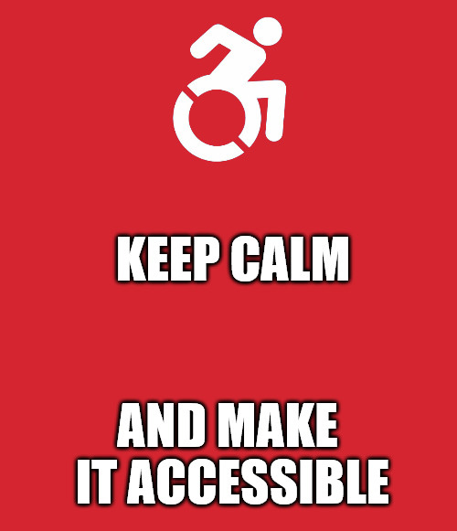

Gérer l’accessibilité d’un projet sans compétences techniques
Sommaire
- But et mise en contexte
- Avant-vente, spécifications et formation
- Présentation des outils de test
- Tester soi-même
- Couverture des critères et restitution aux équipes
- Et après ?
- Questions.
But de ce mémoire
L’accessibilité est un sujet riche. Il y a plusieurs normes et référentiels, beaucoup de critères à respecter.
À partir de ce constat :
- Comment gérer un projet d’accessibilité web quand on est novice en la matière ?
- Comment vérifier sa mise en oeuvre ?
- Comment restituer aux équipes ?
Contexte
Un client demande “un site accessible selon les normes en vigueur”.
Par quoi commencer ? Voici quelques bases pour répondre à ce besoin.
Avant-vente
- Prévoir un chiffrage plus large (surtout si l’équipe n’est pas formée)
- Ventiler les charges sur tous les postes (ce n’est pas que du développement) ou prévoir une ligne "accessibilité" selon le contexte
- Impact sur le planning : s’assurer que l’équipe peut produire dans les temps
Plan d’Assurance Qualité
Se renseigner sur le sujet avant de faire les spécifications. Découvrir le
RGAA.
Établir un PAQ :
- Inscrire l’utilisation du RGAA et l’objectif du niveau AA
- Comment sera testée l’accessibilité (qui, quand, comment)
- Procédure maintenance, définition d’un niveau d’acceptation des livrables
- Ajouter en annexe les critères à respecter par chacun (idéalement séparés par métiers)
- Si mode agile : accessibilité peut être incluse dans la définition de “fait”
Spécifications
S’entourer des bonnes personnes pour aider à la rédaction des spécifications techniques et fonctionnelles.
Détailler comment :
- Gérer le texte masqué (.visually-hidden)
- Gérer les alternatives aux images (décoratives ou non, images liens)
- Gérer les changements de langues
- Intégrer les vidéos et les composants dynamiques de manière accessible
Formation
- Présentation des critères sur la base des annexes -> anticipation sur la réflexion du design, les recherches de plugins JavaScript
- Formation externe
- Accompagnement par un expert
- Plugins pour Sketch et Photoshop, documentation (notices Atalan et RGAA)
Outils de test
- Wave toolbar
- aXe Core
- Lighthouse de Google Chrome
- HeadingsMap
- Tanaguru Contrast Finder
- Validateur w3C
Wave toolbar
Idéal pour les chefs de projet, cette extension met en surbrillance différentes informations comme les erreurs, les avertissements, les éléments ARIA utilisés, les niveaux de titres.
Wave toolbar
Chaque information possède un lien avec des détails.

Wave toolbar
Un panneau contenant des informations détaillées sur chaque point relevé est disponible et permet d’avoir de la documentation.
aXe Core
Idéal pour les développeurs, c’est un outil très populaire (plus d’1 million de téléchargements). Il se base sur le référentiel WCAG, la section 508 et donne des bonnes pratiques de code (role="main" sur balise main uniquement, titre de niveau 1 présent dans la page).

Lighthouse de Google Chrome
Idéal pour les développeurs et basé sur aXe Core (pour l’accessibilité), il scanne la page pour donner un score d’accessibilité, de performance, de SEO et de progressive web app.
Lighthouse de Google Chrome
Le volet accessibilité liste les erreurs et comment les corriger. Il indique aussi les tests pouvant être fait manuellement, les tests réussis et ceux non applicables.
HeadingsMap
Idéal pour les chefs de projet. Cette extension liste tous les titres présents dans la page. Cela permet de voir d’un coup d’oeil si la hiérarchie h1, h2, h3, h4... est respectée au non.
Tanaguru Contrast Finder
Idéal pour les designers, ce site permet de tester le ratio de contraste entre le texte et la couleur de fond et propose une palette de couleurs valides si le test initial n’est pas conforme.

Tanaguru Contrast Finder
La combinason de couleur initiale est invalide. Une palette conforme est proposée.

Validateur W3C
Idéal pour les développeurs, cela permet de valider le code HTML est un critère à respecter car cela peut éviter une mauvaise restitution du contenu par les lecteurs d’écran si la structure n’est pas conforme.

Tester soi-même
- Titre de la page
- Navigation clavier
- Zoom de la page
- Supprimer le CSS
- Tester avec un lecteur d’écran
Tester le titre de la page
- Titre de la page - Nom du site
- Erreur sur un formulaire, est-ce-que le titre est mis à jour ?
- Changement des filtres de recherche sur un formulaire, est-ce-que le titre est mis à jour ?
Tester la navigation au clavier
- Idéalement, première tabulation = lien d’évitement
- Ordre de navigation dans le sens de la lecture
- Focus visible sur les éléments interactifs (couleur de fond ou bordure en CSS)
Tester le zoom texte
- Affichage > Zoom > Zoom texte seulement dans Firefox
- Zoomer jusqu’à 200% (appuyer 6 fois sur ctrl + +)
- Si texte masqué ou se superpose, le critère est invalidé
Zoom invalide (height fixe dans le CSS)
Zoom valide (min-height dans le CSS) 
Supprimer le CSS
Avec Wave Toolbar par exemple. Le contenu doit rester compréhensible et visible.
Liens de réseaux sociaux avec des icônes
Le texte des liens apparaît lorsque CSS est désactivé
Tester avec un lecteur d’écran
Avec
NVDA ou Jaws sur Windows ou VoiceOver sur Mac (natif).
Permet de juger de la compréhension des contenus et de la pertinence des alternatives textuelles.
Base de référence soit :
- NVDA dernière version + Firefox
- Jaws version précédente + Firefox ou IE9+
- Voice Over dernière version + Safari
Soit :
- NVDA dernière version + Firefox ou IE9+
- Jaws version précédente + Firefox
- Voice Over dernière version + Safari
Couverture des critères et restitution aux équipes
En répartissant les tests entre chaque pôle, chacun doit s’être assuré de respecter tous les critères qui le concerne.
Pour vérifier rapidement : Test aXe + tests manuels.
Si vous avez plus de temps : Test lecteur d’écran, parcourir le référentiel au maximum.
Ticket Trello, Jira, Mantis... comme n’importe quel autre bug.
Les prioriser selon l’impact utilisateur, la répétition dans les pages, etc. Faire un ticket par non-conformité le
plus détaillé possible (copie écran, lien vers ressource pouvant aider à la correction)
Et après ?
- Maintenir le niveau de conformité après la mise en ligne en formant les contributeurs et en vérifiant l’accessiblité des futurs développements.
-
Faire faire un audit pour valider la démarche d’accessibilité. Plusieurs avantages :
- Vous aide si vous n’êtes pas sûrs d’avoir bien respecté un critère (ex. les scripts)
- Montée en compétence de toute l’équipe grâce aux suggestions de l’expert
- Meilleure qualité du projet et capitalisation sur les prochains
- Satisfaction du travail bien fait
- Labellisation ?
Attention, il faut s’assurer d’avoir respecté au mieux l’accessibilité. Sinon il y a un risque de relever trop d’erreurs qui peuvent être coûteuses à corriger.
Conclusion
- L’accessibilité doit être prise en compte dès le début comme le SEO ou la performance, ce n’est pas un bonus dans un projet
- Faire de l’accessibilité à posteriori est coûteux et complexe. Pensée en amont, l’équipe peut anticiper sur de la recherche technique ou d’outils
- Les tests automatiques valident environ 30% des critères. Validation manuelle pour les critères de pertinence entre autres.
-
Impliquez votre équipe dans une démarche de mise en conformité d’accessibilité
- Gain de temps si chacun est responsable de l’accessibilité de ses livrables
- Montée en compétence de toute l’équipe
- Capitalisation sur d’autres projets même sans accessibilité. Il y a plein de critères simples à intégrer
- Vocations d’experts ? ;)
Merci, des questions?
